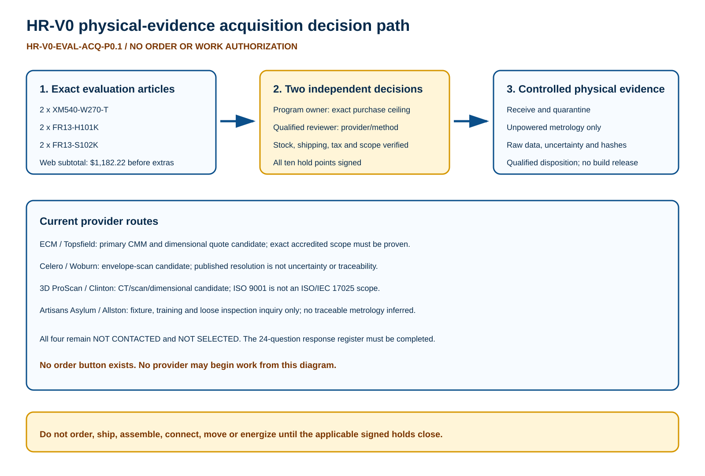

Physical articles
Six exact ROBOTIS articles support the J1/J2 evidence route. The current official web-price subtotal is $1,182.22 before shipping, tax and fees.
Two separate approvals
The program owner controls purchase and maximum spend. A qualified mechanical/metrology reviewer independently controls provider, equipment, method and uncertainty acceptance.
Evidence boundary
A quote is not an order. Receipt is not assembly release. Metrology is not a stop, fabrication, motion, safety or energization approval.
Readable decision path

Current cost snapshot
| Item | Order code | Qty | Unit snapshot | Extended | Availability boundary |
|---|---|---|---|---|---|
| XM540-W270-T | SKU 902-0137-000 | 2 | $482.89 | $965.78 | Active listing; current stock and allocation NOT VERIFIED; written order confirmation required |
| FR13-H101K Set | SKU 903-0270-300 | 2 | $76.71 | $153.42 | Active listing; current stock and allocation NOT VERIFIED; written order confirmation required |
| FR13-S102K Set | SKU 903-0269-300 | 2 | $31.51 | $63.02 | Active listing; current stock and allocation NOT VERIFIED; written order confirmation required |
Provider capability screen
| ID | Provider | Location | Candidate role | Qualification boundary | State |
|---|---|---|---|---|---|
| EAP-001 | East Coast Metrology / ECM | 428A Boston Street, Topsfield, MA 01983 | PRIMARY CMM/DIMENSIONAL AND POSSIBLE SCAN QUOTE CANDIDATE | Do not infer that Project Button part inspection is inside the accredited scope; require current certificate/scope, exact equipment, calibration traceability, method and uncertainty in the quote | NOT SELECTED |
| EAP-002 | Celero Partners | 99 Blueberry Hill, Woburn, MA 01801 | ENVELOPE/POINT-CLOUD QUOTE CANDIDATE | Published resolution is not measurement uncertainty or traceability; critical axial/attachment faces remain CMM/contact evidence unless a qualified method is accepted | NOT SELECTED |
| EAP-003 | 3D ProScan | 144 Pleasant Street, Clinton, MA 01510 | CT/SCAN AND DIMENSIONAL QUOTE CANDIDATE | ISO 9001 is not an ISO/IEC 17025 measurement scope; require exact equipment, traceability, method validation and uncertainty for every proposed result | NOT SELECTED |
| EAP-004 | Artisans Asylum | 96 Holton Street, Allston, MA 02134 | FIXTURE/TRAINING/LOOSE INSPECTION CAPABILITY INQUIRY ONLY | No published CMM, accredited dimensional scope, uncertainty or accepted Project Button job; not a traceable metrology route unless written evidence changes this state | NOT SELECTED |
Decision hold points
| Hold | Before | Condition | Failure action |
|---|---|---|---|
| EAH-001 | Any purchase | Program owner signs exact lines, maximum spend and permitted evaluation-only use | Do not order |
| EAH-002 | Any purchase | Current seller price, stock allocation, shipping, tax and quote expiration are recorded | Do not infer availability or total cost |
| EAH-003 | Any purchase | Seller identity, ship-to, payment authority and return terms are accepted | Do not enter payment or place order |
| EAH-004 | Shipment release | Receiving/quarantine location and accountable receiver are named | Do not ship to an uncontrolled location |
| EAH-005 | Provider selection | Provider returns every applicable EAR-001..024 response with supporting evidence | Provider remains research candidate |
| EAH-006 | Metrology work authorization | Qualified reviewer accepts provider scope, equipment, calibration, method and uncertainty | Do not ship or authorize work |
| EAH-007 | Threaded temporary assembly | Exact screw/length/depth/spacer/torque/locking/reuse instruction is signed | Loose-part metrology only |
| EAH-008 | Article shipment | Packing, declared value, insurance, chain of custody and return route are accepted | Keep articles quarantined |
| EAH-009 | Metrology execution | Configuration-specific work authorization names scope, provider, commit, articles, witnesses and stop conditions | Do not begin work |
| EAH-010 | Metrology execution | Provider acknowledges unpowered/no-source boundary and no design-release authority | Stop and reject work authorization |